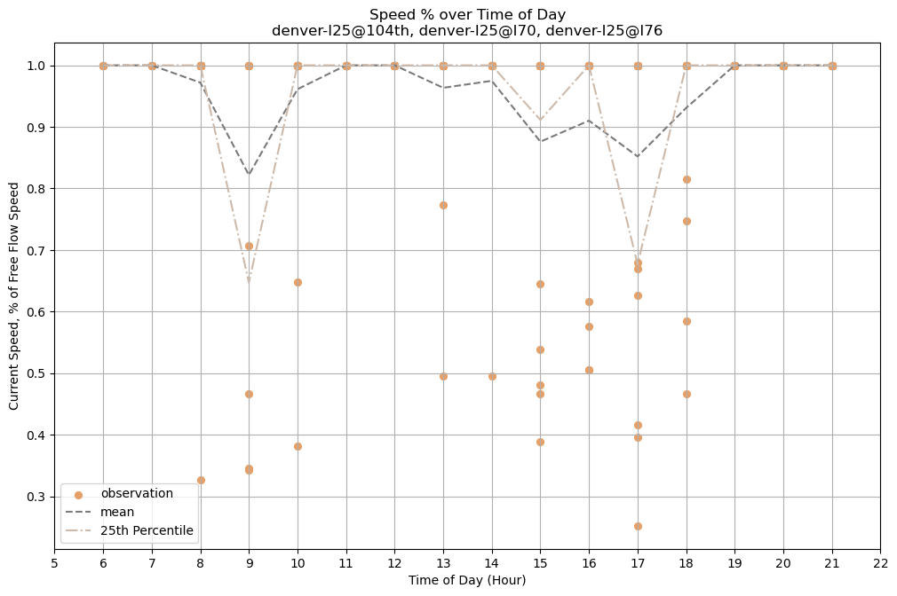

Plot Example¶
A basic scatterplot can be generated using zero_traffic.plot.basic_scatter.
[1]:
from zero_traffic import proc_data as prd
from zero_traffic import plot as pl
df = prd.load_data_archive()
assert df['confidence'].unique().sum() == 1
places = ['denver-I25@104th', 'denver-I25@I70', 'denver-I25@I76']
sl = pl.subset_data(df, places)
fig = pl.basic_scatter(sl, subtitle=', '.join(places))
